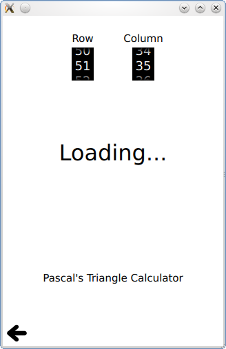

Qt Quick Examples - Threading
This is a collection of QML multithreading examples.

Threading is a collection of QML multithreading examples.
Running the Example
To run the example from Qt Creator, open the Welcome mode and select the example from Examples. For more information, visit Building and Running an Example.
Threaded ListModel
Threaded ListModel contains a ListView and a ListModel. The ListModel object is updated asynchronously in another thread, and the results propagate back to the main thread. A timer requests updates from the worker thread periodically:
Timer {
id: timer
interval: 2000; repeat: true
running: true
triggeredOnStart: true
onTriggered: {
var msg = {'action': 'appendCurrentTime', 'model': listModel};
worker.sendMessage(msg);
}
}
Inside the worker thread, the ListModel is synchronized once the data is finished loading:
WorkerScript.onMessage = function(msg) {
if (msg.action == 'appendCurrentTime') {
var data = {'time': new Date().toTimeString()};
msg.model.append(data);
msg.model.sync(); // updates the changes to the list
}
}
WorkerScript
WorkerScript contains an example of using a WorkerScript to offload expensive calculations into another thread. This keeps the UI from being blocked. This example calculates numbers in Pascal's Triangle, and not in a very optimal way, so it will often take several seconds to complete the calculation. By doing this in a WorkerScript in another thread, the UI is not blocked during this time.
When the UI needs another value, a request is sent to the WorkerScript:
Spinner {
id: rowSpinner
label: "Row"
onValueChanged: {
resultText.text = "Loading...";
myWorker.sendMessage( { row: rowSpinner.value, column: columnSpinner.value } );
}
}
The workerscript then is free to take a really long time to calculate it:
WorkerScript.onMessage = function(message) {
//Calculate result (may take a while, using a naive algorithm)
var calculatedResult = triangle(message.row, message.column);
//Send result back to main thread
WorkerScript.sendMessage( { row: message.row,
column: message.column,
result: calculatedResult} );
}
When it's done, the result returns to the main scene via the WorkerScript type:
WorkerScript {
id: myWorker
source: "workerscript.mjs"
onMessage: (messageObject) => {
if (messageObject.row == rowSpinner.value && messageObject.column == columnSpinner.value){ //Not an old result
if (messageObject.result == -1)
resultText.text = "Column must be <= Row";
else
resultText.text = messageObject.result;
}
}
}